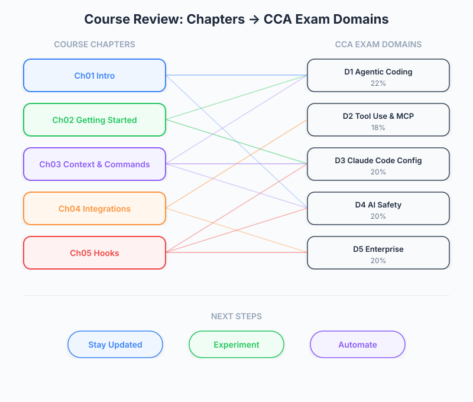

| Item | Details |
|---|---|
| Exam Coverage | All 5 Domains (D1-D5) |
| Task Statements | Review: 1.1, 2.1, 2.4, 3.1, 3.2, 3.6 |
| Course Source | claude-code-in-action / 06-sdk-and-wrap-up / Lesson 22 |
The course wraps up with three recommendations: stay updated, experiment, and automate. For PMs, this is the synthesis moment — understanding what Claude Code can do across the entire stack (agentic execution, tool integration, configuration, CI/CD automation) and translating that into product decisions, team workflows, and automation strategy.

| Chapter | What We Learned | PM Action Item |
|---|---|---|
| 01 — Intro | Claude Code is an agentic coding assistant that plans, executes, and iterates autonomously. It is fundamentally different from autocomplete. | Write positioning docs that distinguish agentic AI from autocomplete tools when evaluating build-vs-buy. |
| 02 — Getting Started | Project setup via CLAUDE.md defines how Claude understands your codebase. Context window is finite and must be managed. |
Define project standards for CLAUDE.md — what conventions, constraints, and context should every team project include? |
| 03 — Context & Commands | Custom commands create reusable workflows. Context can be precisely controlled with @file references. |
Identify repetitive team workflows (code review, bug triage, release notes) that could become custom commands. |
| 04 — Integrations | MCP servers extend Claude's capabilities. GitHub integration automates PR reviews and issue responses. | Evaluate MCP servers relevant to your stack. Set up automated PR review as a quality gate. |
| 05 — Hooks | Hooks enforce policies at the tool-execution level. 9 hook types cover the entire lifecycle. | Define governance policies (e.g., "no direct production DB access") that should be enforced via hooks. |
| 06 — SDK & Wrap Up | The SDK enables programmatic integration. The course ends with three forward-looking recommendations. | Plan integration roadmap — where does Claude Code fit programmatically in your CI/CD pipeline? |
Claude Code is actively evolving. New capabilities change what is possible.
PM Actions:
- Subscribe to Claude Code changelog and release notes
- Maintain a capability inventory — what Claude Code can do today vs what it could not do 3 months ago
- Revisit "not feasible" decisions quarterly as capabilities evolve
Customization (CLAUDE.md, commands, MCP servers) is where Claude Code becomes a team-specific tool rather than a generic assistant.
PM Actions:
- Allocate sprint time for Claude Code experimentation (custom commands, MCP server trials)
- Create a shared CLAUDE.md template for your organization's projects
- Document which MCP servers your team uses and why
GitHub integration turns Claude Code from a developer tool into a team automation layer.
PM Actions:
- Map your team's repetitive tasks to potential automation triggers (PR created, issue opened, @claude mention)
- Define SLAs for automated responses (e.g., "PR review within 5 minutes of creation")
- Create a governance framework for what Claude can and cannot do autonomously
| Domain | Weight | What PMs Should Know | Course Chapters |
|---|---|---|---|
| D1 — Agentic Architecture | 27% | How Claude plans and executes autonomously. Why it sometimes fails (context limits, tool selection). | 01, 02, 06 |
| D2 — Tool Use & MCP | 20% | MCP as an extensibility model. How to evaluate and integrate third-party tools. | 04 |
| D3 — Configuration | 20% | CLAUDE.md as team standards. Commands as reusable workflows. Hooks as policy enforcement. CI/CD as automation. |
02, 03, 04, 05 |
| D4 — Security & Trust | 15% | Permission model (3 tiers). Why CI requires explicit permissions. Hook-based access control. | 02, 04, 05 |
| D5 — Developer Productivity | 18% | When to use Claude Code. How automation reduces toil. Measuring productivity gains. | 01, 04, 06 |
Based on the full course, here is a prioritized investment framework:
| Priority | Investment | Effort | Impact | Rationale |
|---|---|---|---|---|
| 1 | CLAUDE.md standards |
Low | High | Every interaction benefits from clear project context. Zero ongoing cost. |
| 2 | Automated PR review (GitHub integration) | Medium | High | 100% review coverage. Catches structural issues. Reduces developer context switching. |
| 3 | Custom commands for team workflows | Low | Medium | Standardizes how the team interacts with Claude. Reusable across projects. |
| 4 | MCP server evaluation | Medium | Medium | Extends Claude's capabilities to match your tech stack. |
| 5 | Hook-based governance | High | Medium | Policy enforcement at the tool level. Important for security-sensitive teams. |
| 6 | SDK integration | High | Variable | Programmatic access for custom tooling. ROI depends on use case. |
| Metric | Before Claude Code | After Full Adoption |
|---|---|---|
| PR review coverage | Inconsistent (depends on availability) | 100% automated first-pass |
| Bug triage time | Hours (developer investigates) | Minutes (@claude mention in issues) |
| Onboarding friction | High (learn project conventions manually) | Lower (CLAUDE.md encodes conventions) |
| Policy compliance | Manual review | Automated (hooks enforce at tool level) |
| Repetitive task cost | Developer time per occurrence | One-time command/automation setup |
Your team has completed the Claude Code in Action course. The CTO asks you to propose a phased rollout plan. Which order makes the most sense?
A developer on your team says "Claude Code is just a fancy autocomplete." Based on the course, what is the key distinction you should explain?
Your team wants to automate three tasks: (1) PR code review, (2) enforce "no console.log in production code" policy, (3) generate release notes from PR descriptions. Which Claude Code features map to each?